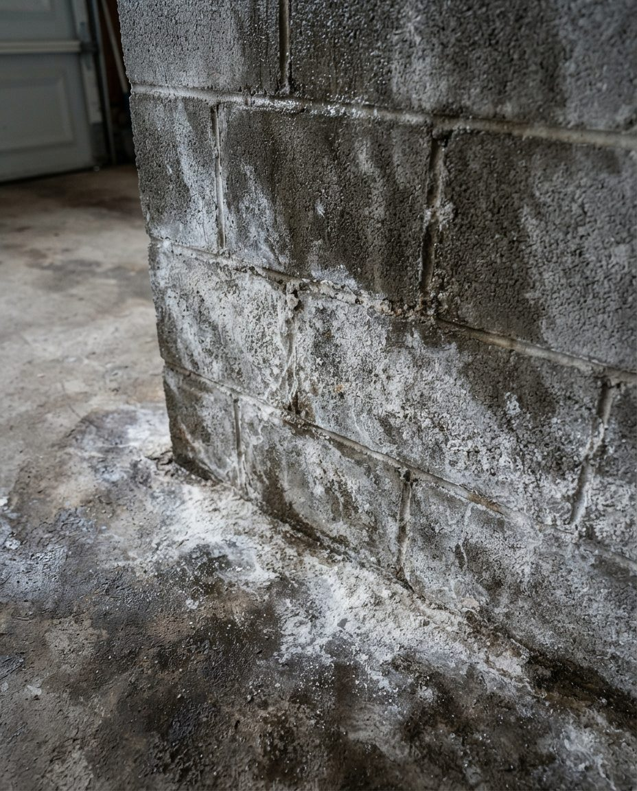
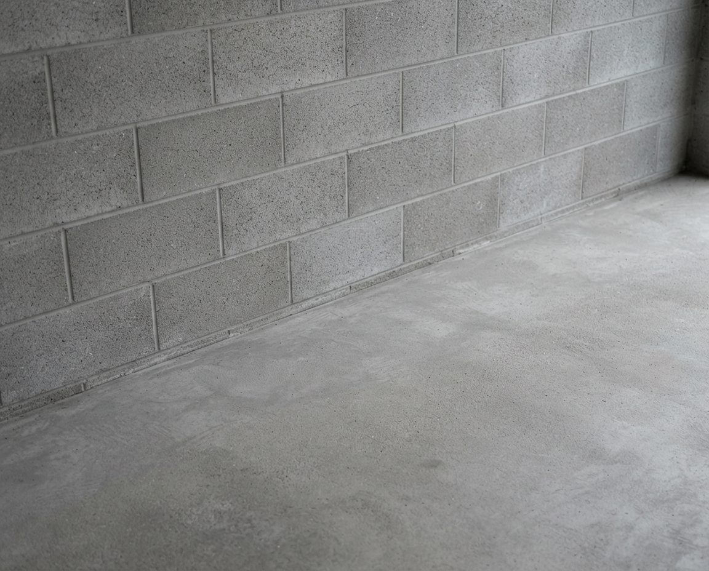

Richmond is built on the Fraser River delta, at or barely above sea level, behind a dyke system. That gives it the highest water table and the most moisture-affected garage stock in Metro Vancouver. If your garage floor has a chalky white bloom across it, nothing has gone wrong — that's the delta, and it's the single most common thing we're called out for here.


Richmond efflorescence — the delta signatureRemoved mechanically and with a matched acid treatment, then fully neutralised. But removal is half the job: on delta soil it returns unless the water movement is addressed, so we identify the source too.
This isn't marketing. It's geology.
Richmond occupies Lulu Island and Sea Island in the Fraser River delta — land built from river sediment, sitting at or barely above sea level and protected by a dyke system. The water table beneath most of the city is shallow, and in winter it's shallower still.
A concrete slab poured on that ground is in permanent contact with damp soil. Concrete is porous, so capillary action pulls that groundwater upward through the slab continuously, where it evaporates at the surface. On the way it carries dissolved mineral salts, and those salts are left behind as the chalky white crystalline bloom called efflorescence.
If you're considering an epoxy or polyaspartic garage floor in Richmond, have the slab moisture-tested first — a calcium chloride or relative humidity probe test, not a guess. A Metro Vancouver double garage coating runs roughly $2,800 to $7,200 installed, and spending that on an unmitigated Richmond slab is how people end up paying twice. We don't sell coatings, so we've no reason to tell you anything but what the test says.
Richmond also carries an enormous volume of townhouse tandem garages — long, narrow, single door, furnace and hot water tank inside, strata bylaws governing storage. Combine a tandem garage with a delta water table and you get the specific Richmond job: damp slab, poor airflow, and everything the owner cares about stored on the floor at the back where they can't reach it.
Tape a 45 cm square of clear plastic sheet tightly to your Richmond garage floor on all four edges. Leave it 24 to 48 hours, then look underneath. Condensation on the plastic, or a dark damp patch on the concrete below it, means your slab is actively passing moisture vapour. It's a rough field version of the ASTM plastic sheet test, and in Richmond it comes back positive more often than not.
The dominant type across Richmond — City Centre, Brighouse, McLennan, Hamilton and the newer developments throughout. Long, narrow, mechanical equipment inside, strata storage rules in play. We use narrow-depth shelving down one side only and keep the walking channel.
Steveston, Terra Nova, Seafair, Broadmoor, Riverdale. Larger family homes with conventional garages, often with substantial gear loads — boats, paddleboards and fishing equipment are common near Steveston.
Richmond's pre-1980 housing sits on slabs poured with little or no vapour barrier, directly on delta soil. These are the ones where efflorescence is heaviest and where high-pressure washing is often the wrong tool.
Properties closest to the dyke system and the river arms see the most groundwater pressure. Standing water at the apron after heavy rain is common, and door seal failure shows up faster here than anywhere else we work.
| Problem | Why it happens here | What it needs |
|---|---|---|
| Heavy efflorescence | Shallow delta water table wicking salts up through the slab continuously | Mechanical plus matched acid removal, full neutralisation, moisture source identified |
| Coating blistering or delamination | Vapour pressure under an unmitigated slab pushing at the film | Moisture test before recoating; mitigating primer specified if needed |
| Damp, musty smell | Sustained slab moisture with poor ventilation in a closed tandem garage | Source located, treated, then forced dry-down — not masked with fragrance |
| Ruined floor-level storage | Cardboard and fabric on a slab that's quietly wet year-round | Everything into gasketed bins, lifted clear on raised shelving |
| Standing water at the apron | Low elevation, negative grade, failed door seal | Flagged in a written report with what it would take to fix |
| Mould on lower walls | Delta moisture plus unheated, unventilated space | Substrate-matched treatment, porous material removed, forced drying |
| Tandem garage dead zone | Back third unreachable without moving everything in front | Zone redesign; low-turnover items only at the back |
| Corroded tools and bike drivetrains | Metal in sustained contact with a damp slab | Wall and rack storage, everything off the concrete |
Richmond is the closest municipality we serve to the Vancouver Landfill in Delta, which is where non-divertible waste from a garage cleanout ultimately goes. That's a genuine cost advantage: shorter disposal runs mean less drive time on your invoice.
Richmond also operates its own recycling depot for residential material, and BC's stewardship programmes take paint, motor oil, antifreeze, electronics, batteries and tyres free of charge at designated depots — which covers a surprising share of what's actually in a Richmond garage.
We sort before we haul, in that order of preference: reuse, donation, stewardship return, recycling, landfill. On a typical job that halves the disposal portion of the bill. Confirm current facility hours and rates before hauling your own load; full 2026 Metro Vancouver fee detail is on our garage cleanout page.
That's efflorescence — mineral salts carried to the surface by groundwater moving up through your slab and left behind as the water evaporates. In Richmond it's close to universal, because the city is built on Fraser delta sediment with a shallow water table. Quick test: spray it with water. Efflorescence dissolves and disappears; mould doesn't. It's harmless in itself, but it proves your slab is actively passing moisture.
Yes, and it's geology rather than anything to do with the houses. Richmond sits on Lulu and Sea Islands in the Fraser delta, at or barely above sea level behind a dyke system, with a shallow water table beneath most of the city. Slabs poured on that ground are in permanent contact with damp soil and wick moisture upward continuously. It's the most moisture-affected garage stock in the region.
Have the slab moisture-tested first — a calcium chloride or relative humidity probe test, not a guess. Coating failure in Richmond is overwhelmingly a moisture problem: vapour rising through an unmitigated slab pushes at the underside of the film until it blisters or delaminates. A double garage coating runs roughly $2,800 to $7,200 in Metro Vancouver, and that's a lot to spend twice. We don't sell coatings, so the test result is all we're reporting.
A single-car or tandem garage clean starts at $249 and a standard double at $349. Heavy efflorescence treatment typically adds $80 to $200 because Richmond slabs carry more of it than most. Full declutter and organise runs $749 to $1,100; cleanouts start at $399 plus disposal at cost. Being close to the Vancouver Landfill in Delta keeps disposal drive time down.
Constantly — Richmond has one of the highest concentrations of them in the region. Long, narrow, single door, furnace and hot water tank inside, and strata bylaws governing what can be stored. We use narrow-depth shelving down one side only so the walking channel survives, and we maintain code clearance around the mechanical equipment.
Anything paper, fabric or cardboard, unless it's in a genuinely gasketed container and lifted off the floor. With Richmond's water table the slab is quietly damp year round, so cardboard collapses, fabric mildews, and photographs, documents, electronics and instruments are usually ruined within a couple of winters. If it matters to you, it doesn't belong in an unheated delta-soil garage.
Free on-site quote. Fixed price before we start. Disposal charged at cost with receipts.
Serving Steveston, Terra Nova, Seafair, Broadmoor, Riverdale, City Centre, Hamilton and Sea Island.